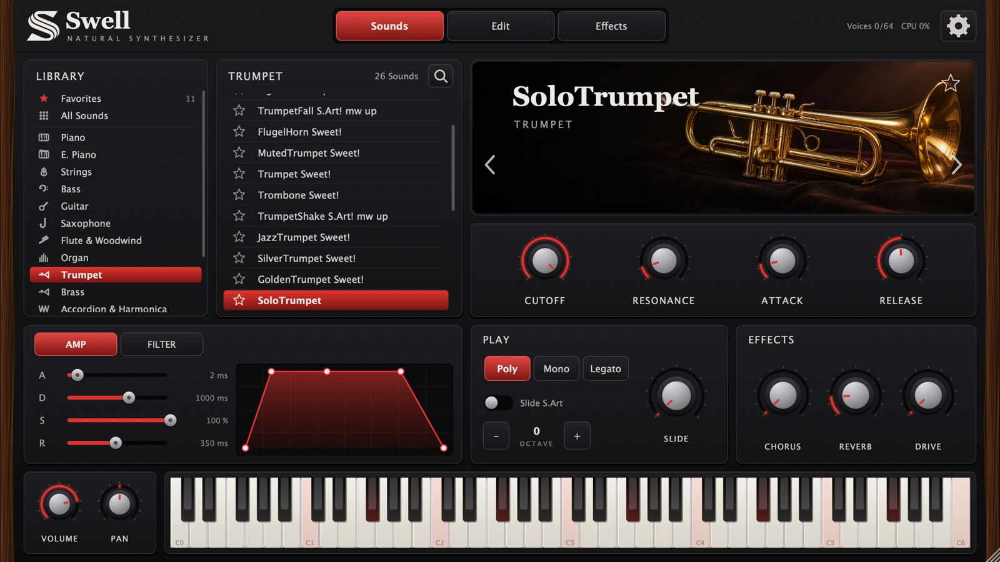

Version 2.0.1
Télécharger Swell Natural Synthetiser
Choisis ton système, installe le plugin, indique-lui ta banque de sons, puis active ta licence. Ça prend deux minutes.

1
Le plugin
Télécharger pour Mac
Swell-Natural-Synthetiser-2.0.1-macOS.pkg
- Ferme ton logiciel de musique, puis ouvre le fichier .pkg.
- Si macOS bloque l'ouverture : clic droit → Ouvrir, ou Réglages Système → Confidentialité et sécurité → Ouvrir quand même.
- Le plugin s'installe dans les dossiers VST3 et Components ; l'application va dans Applications. Logic utilise la version Audio Unit.
Télécharger pour Windows
Swell-Natural-Synthetiser-2.0.1-Windows-x64.exe
- Ferme ton logiciel de musique, puis lance le fichier .exe.
- Si Windows affiche « Windows a protégé votre ordinateur » : Informations complémentaires → Exécuter quand même.
- Le VST3 va dans
C:\Program Files\Common Files\VST3; l'application apparaît dans le menu Démarrer.
2
La banque de sons
Les sons ne sont pas dans l'installateur : ils restent dans un dossier à part, Swell Library (environ 9 Go), que tu peux mettre où tu veux, même sur un disque externe.
Au premier lancement, le plugin te demande ce dossier : clique sur Choose folder… et choisis celui qui contient Swell Library.swellbank et Samples. Il s'en souvient ensuite. Pour le déplacer plus tard : roue dentée → Change…
3
Active ta licence
À l'ouverture, colle ta clé SWELL-XXXXX-XXXXX-XXXXX-XXXXX (reçue par email et visible dans ton espace) puis clique sur Activer. Internet est nécessaire une seule fois ; ensuite le plugin fonctionne hors ligne.